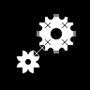
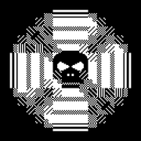
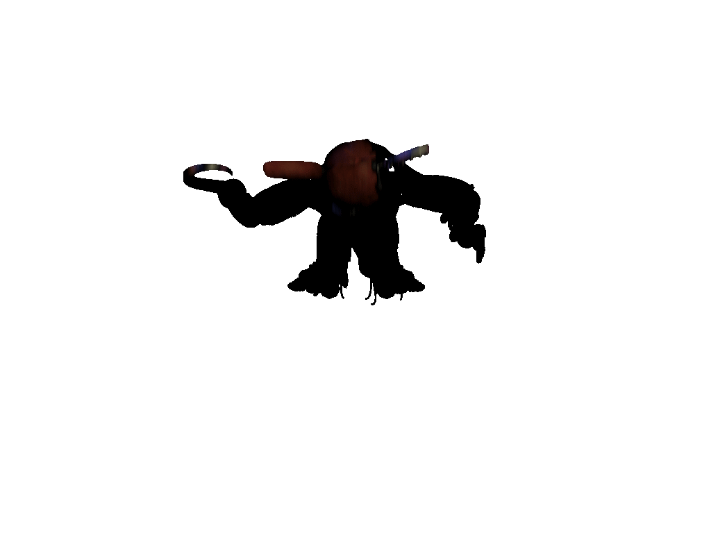

NOCTURNAL PLAYER
PANELS:
Playlists
Player
Tracklist
Lyrics
Visualizer
Show All
Tile All
Float All
App Fullscreen

[::] NOW PLAYING & VISUALIZER
FULL
FLOAT
HIDE

Upload Cover
Reset Default
Playlist 1
No track loaded
Supported formats: OGG / WAV / MP3 / YT Music
[::] VISUALIZER
WAVE
BAR
CIRCLE
XY SCOPE
VIEW: SPLIT
FLOAT
FULL
HIDE
0:00
0:00
|< Prev
Play
Stop
Next >|
Shuffle: OFF
Loop: OFF
VOL
[::] TRACKLIST
FULL
FLOAT
HIDE
Playlist 1 Tracks (0)
#
Cover
Track Name
Format
Actions
No tracks in this playlist. Click "Import Folder", "Import from YT Music...", or "Add Audio Files..." to begin.
[::] TIMED LYRICS
FULL
FLOAT
HIDE
Timed Lyrics
IDLE
Fetch Lyrics
Load .LRC
Play a YT Music song or local track to display timed lyrics here.
Playlist Name:
Cancel
Save
Import from YouTube Music
YT Music URL (Track or Playlist) or Search Query:
Audio Format:
MP3
OGG
WAV
Use YT Music thumbnail as track cover (uncheck to keep Nocturnal default cover)
Preparing YT Music import and timed lyrics...
Cancel
Import
[::] OPTIONS & SETTINGS
Close
Visualizer Sensitivity
Amplitude Sensitivity:
70%
Workspace Layouts (Max 6)
L1
L2
L3
L4
L5
L6
Save Layout
Reset Layout
Discord Rich Presence
Discord RPC: ON
DISCORD RPC: ACTIVE
Visual Style
Strip all Nocturnal styling (raw unstyled look):
Unstyled Mode: OFF
Desktop & Start Menu Shortcuts
Install Desktop & Start Menu Shortcuts
Secret
Mystery Button
